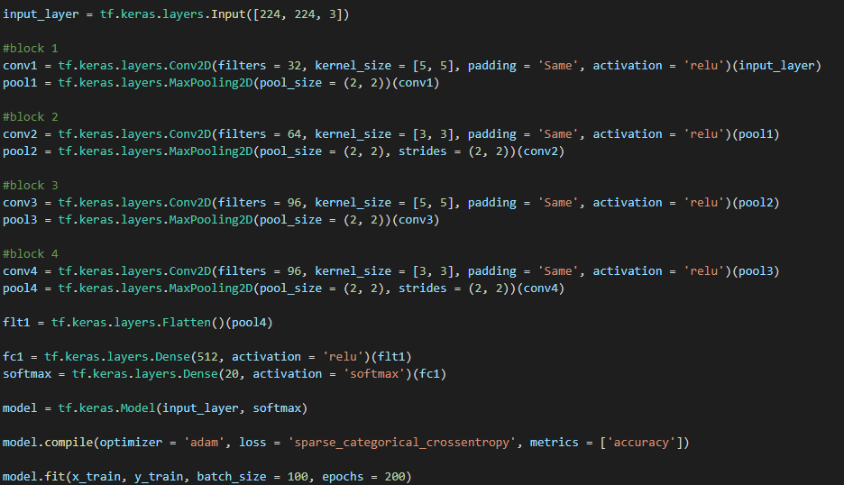
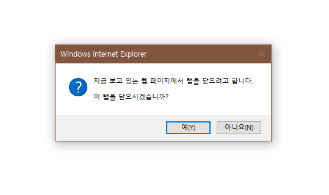

Vehicle ChatBot
자동차를 사용자에게 추천해주는 봇
자동차의 정보를 챗봇으로 확인하고 자동차를 캡쳐해 무슨 자동차인지 알려주는 챗봇Keras
Keras를 이용해서 수십장의 자동차 사진을 분석하여 학습했던 코드 일부
사실 메인은 이게 다임
Vehicle Finder

자동차를 찾을 때 쓰는 웹페이지이다.
학습한 모델을 이용하여 Flask를 사용해 Heroku를 사용하여 웹페이지로 만들었다.
그리고 이 웹페이지는 발표할 영상에 나온 것과 다르다. 이유는 발표하기 며칠 전에 업그레이드 했다.
근데 어떻게 해야할지는 모르겠지만 Heroku 특성인지 처음에 접속하면 시간이 걸린다.. 몇십초 지나면 제대로 동작한다.
저쪽 아래 돌아가기 버튼은 챗봇 웹페이지로 돌아가는 것이 아닌 진짜 뒤로 가게하는 버튼이다.
YOLO V5
이건 그냥 재미삼아 해보고 싶어서 해보았던 것이다.
실제로 적용은 안할 것임
이거 만들 때 구글 코랩에서 돌리기엔 GPU가 너무 부족해서 내 컴퓨터로 돌리기 위해 별 짓을 다 했었다.
Windows에서 돌아갈 수 있게 Python 코드를 수정했다.
왜 인지는 모르겠지만 나와 같은 사용자는 구글에 업로드를 안했나보다..
스마트폰과 인터넷 익스플로러

현재 이 웹페이지(자동차 찾기 웹페이지 제외)는 처음 애니메이션 등등 인터넷 익스플로러와 스마트폰에서 지원하지 않는 기능이 너무 많이 있어 차단을 했다.
인터넷 익스플로러의 경우 다른 브라우저로 전환하라고 하고 웹페이지 자체를 꺼버리도록 유도한다.
스마트폰의 경우 챗봇만 있는 웹페이지로 이동하게 된다.
챗봇만 있는 웹의 경우 UI가 너무 작아서 누르기 힘들다.. 조정 어떻게 하나요..?
일부 제작 영상
2021-12-22일 발표할 때 참고용으로 쓸 영상이다.
끝